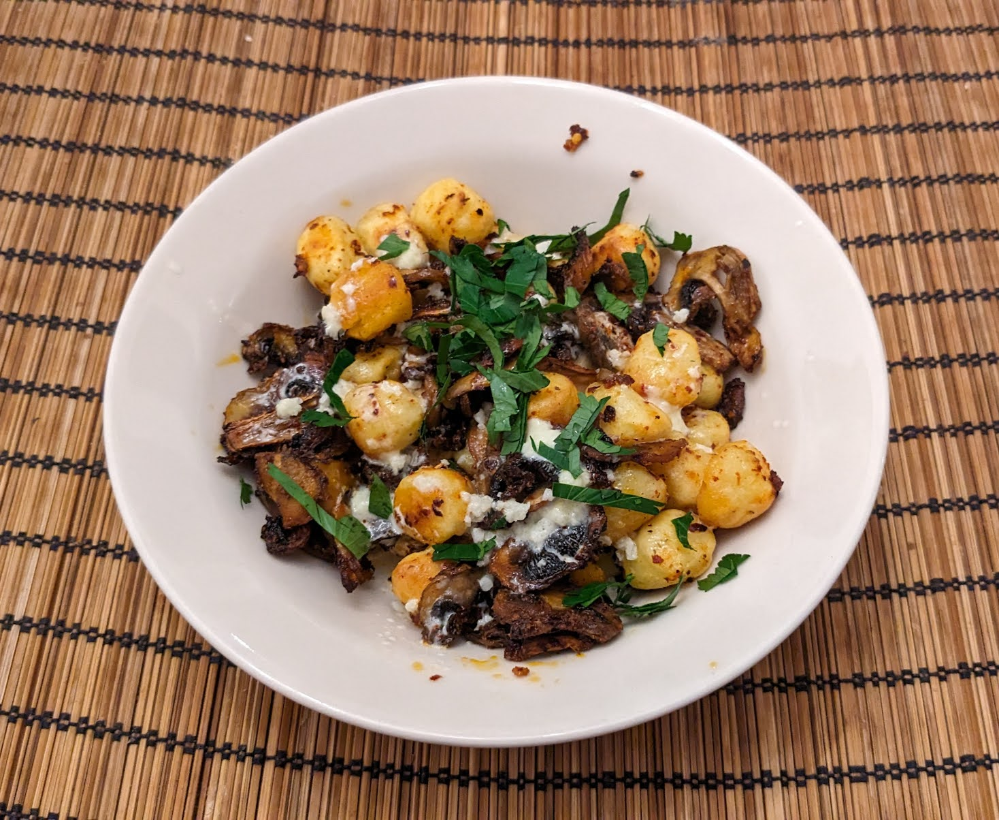

Gnocchis rôtis aux champignons

Pour 3 personnes :
- 500g de gnocchis frais (le genre qu'on trouve au supermarché)
- 500g de champignons de Paris
- Une grosse tête d'ail
- Une petite cuillère à soupe d'ail en poudre
- Une cuillère à café de flocons de piment rouge, ou une cuillère à soupe de gochugaru
- (Facultatif) Un trait de jus de citron
- (Facultatif) Un peu de persil frais
- Huile d'olive, sel, poivre
- Laver les champignons et les couper en tranches plutôt fines. Faire préchauffer le four à 200°C.
- Éplucher l'ail, en laissant les gousses entières. Réserver deux gousses, et mélanger le reste avec les champignons, l'ail en poudre, le piment, et une quantité généreuse d'huile d'olive.
- Saler, poivrer, et disposer le tout sur au moins deux plaques de four (idéalement, trois), et enfourner 20 minutes. Il faut qu'il y ait pas mal d'espace entre les gnocchis, champignons et gousses d'ail.
- Pendant ce temps, écraser les deux gousses d'ail qu'on a réservé plus tôt, les mélanger à la crème, et faire chauffer le tout doucement dans une petite casserole (il ne faut pas que ça bouille).
- Lorsque les légumes sont rôtis (les gnocchis commencent tout juste à prendre des couleurs, les champignons doivent être bien dorés), les sortir, les mélanger à la crème et l'ail pour que ça enrobe bien, les remettre sur une plaque de four, et passer sous le grill 2-3 minutes.
- Servir chaud, possiblement avec un trait de jus de citron et/ou un peu de persil frais.
Retour à la liste des recettes